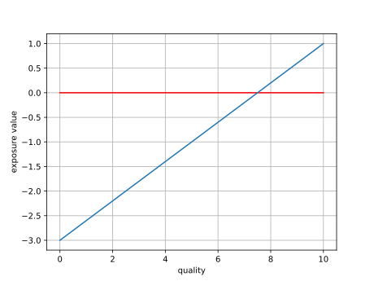

"exposure"
Being paid, "in exposure" is a meme for a reason. The artist can't eat or pay their rent with "exposure".
Yet I think particularly the by default ad free experience of the fediverse provides a new opportunity: lots of content creators need to pay their bills and the way they do it on youtube and twitch is via ads. These ads are controlled in two ways:
- as sponsored segments, where the actual creator does the ad.
- as pre made ads that are picked by the platform and the platform prices and pays the creator and the creator has no control over which kids of ads are shown to the audience.
So, how is this new.
well, #1 is a very niche, very exclusive spot. If the top critic recommends something, it counts. #2 not so much. #10 might still get a word in, #100 will not.
The assumption with "exposure" goes like this:
- The content has value, but people aren't aware of the offer.
- boosting the offer will translate into sales, which are valueable.
- afterwards the boosted creator will have become an entity of their own right.
This will fail if
- the content doesn't actually have value
- the boost is so small and so ineffective, that it doesn't translate into "real value".
So as a graph:

The region to the left is ineffective the area to the right is effective.
So, there are two follow up questions:
-
Who actually are the people who can boost?
-
Is the content you have "good" inside the niche you're trying to boost it in?
2) is hard and up to the booster. But 1) should be something we can find mathematically.